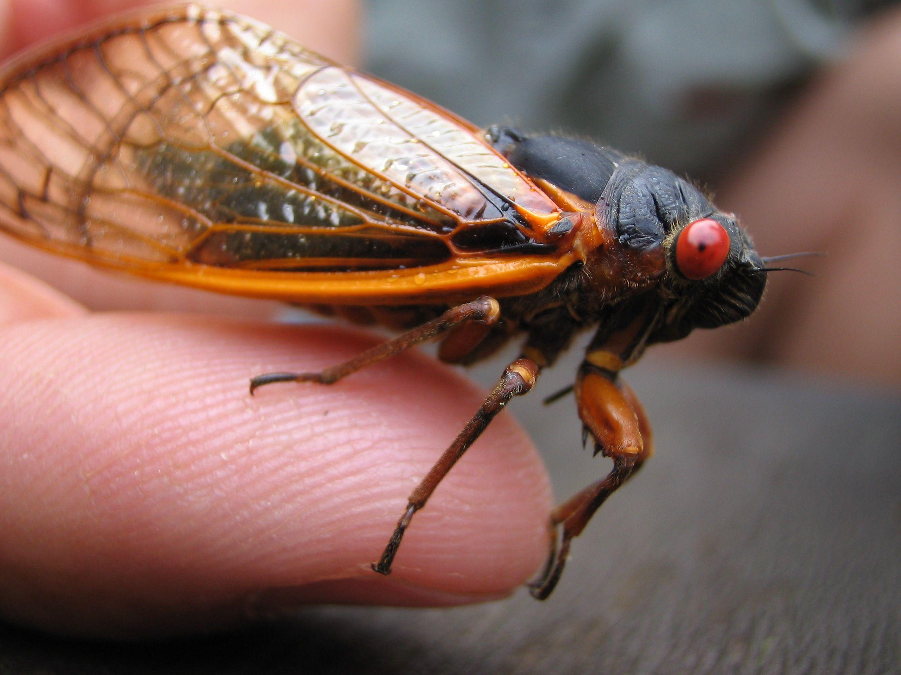

Introduction
The cicada is a fascinating insect and is a part of the Hemiptera order of insects, a relative of both bed bugs and stink bugs. Cicadas emerge from their underground dens, called nymphs, during one of two cycles: annual (once a year) or periodical (once every several years). Annual cicadas thrive throughout the continent, residing in forests, grasslands, and urban areas. Their life span lasts one to two years, with adults emerging each summer. Periodical cicadas, however, appear above ground once every 13 or 17 years. They inhabit Eastern North America and emerge en masse.
As someone from the mid-Atlantic reigon of the East Coast, I grew up hearing stories about cicadas. In my home town, periodical broods emerge once every 17 years. I witnessed the event firsthand during the summer of 2021, when you couldn't walk past a tree without hearing cicadas buzz. My knowledge of cicadas has largely been limited to personal experience. This website hopefully will provide some insight on where to find American cicadas.
Why Map Cicadas?
Though some consider cicadas' noise pollution to be a disturbance, scientists have determined their presence to be an ecological boon. Due to the rarity of a periodical emergence, cicadas provide their local environments with a short-term food surplus. Cicada carcasses, too, provide nutrients to various parts of the food chain.
The National Parks Service has found there are 12 cicada broods in the United States, each of which occupies their own distinct regions within the United States. This project looks specifically at Brood X — one of, if not the most geographically diverse such broods — as a microcosm of the broader American cicada population.
By providing an in-depth look at Brood X through spatial data mapping and supplemental information, this project seeks to demonstrate where cicadas' ecological impacts are most readily felt. Visualizing how cicadas affect regional environments offers insight into their crucial role in the ecosystem.
About This Map
There are two layers present in this map, each of which depicts Brood X, one of the largest and most geographically diverse groups of 17-year periodical cicadas in the United States.
1. The first layer depicts Brood X as observed in the years leading up to and during its 2004 emergence (2000-2004), based on photographic data collected during that time. Unfortunately, there is significantly less data from the time period as compared to later brood emergences.
2. The second layer is based on photographic evidence from the most recent emergence of Brood X in 2021. There is far more evidence in this more recent example, likely due to the availability of crowdsourced information in the cellphone era.
This map shows clear geographic patterns of Brood X in the United States, a cicada cohort which is most common in the mid-Atlantic region, as well as parts of the mid-West and the South.
Observations About Data Spacial Distribution
1. Reigonally: Pharoah cicadas have not drastically changed location over the course of their last two 17-year emergences. Rather, the proliferation of crowdsourced data has provided humans with a clearer understanding of where certain broods of periodical cicadas live.
2. Evolutionarily: Experts hypothesize the more land cicadas inhabit, the lower the species' chances of extinction are, due to biological, predatory or environmental factors. This is why Brood X has been observed across nearly all parts of the eastern United States. Research indicates cicada broods have spread across vast portions of the United States as a means of ensuring their own survival.
3. Technologically: It would be an oversimplification of the above iNaturalist data to assert that Brood X has been fully mapped in the United States. While crowdsourced data has countless benefits, it also has gaps of information (i.e. Tennessee, Georgia and North Carolina having the third largest concentration of cicadas in the 2021 set, but not appearing at all in the 2004 set).
4. Environmentally: The Environmental Protection Agency has reported cicadas as having a positive impact on their habitat. Among other benefits, cicadas are considered a prized food source of predators, aerate local plantlife, bolster water filtration, and add to soil nutrition. By determining the location of cicada broods — a grouping which can include trillions of individual cicadas — one can investigate certain ecological benefits.
5. Personally: To those who wish to experience a periodical cicada emergence, or for anyone who wants to learn whether they, in fact, live in a brood habitat, tracing spacial data about cicada activity can be an invaluable resource. For others — who perhaps wish to enjoy quieter summer nights — spatial data maps can help the cicada-averse steer clear of unwanted insects. Put simply, the map can show people where they may find cicadas.
Sources
1. Baltz, Neal. “Cicada Molting Time Lapse.” YouTube, YouTube, 25 June 2010, www.youtube.com/watch?v=keJp-On1dBc.
2. “Cicada Wallpapers - Top Free Cicada Backgrounds.” Edited by Wallpaperaccess, Wallpaperaccess, 2023, wallpaperaccess.com/cicada.
3. Cooley, John. “Brood X.” Cicadas, 21 Feb. 2017, cicadas.uconn.edu/brood_10/.
4. “Pharaoh Cicada (Magicicada Septendecim).” Edited by ICUN Red List, iNaturalist, 21 Aug. 2023, www.inaturalist.org/taxa/105098-Magicicada-septendecim.
5. Sheikh, Knvul. “Brood Awakening: 17-Year Cicadas Emerge 4 Years Early.” Scientific American, Scientific American, 26 May 2017, www.scientificamerican.com/article/brood-awakening-17-year-cicadas-emerge-4-years-early/#:~:text=Experts%20think%20evolution%20has%20favored,not%20waiting%20for%20their%20fellows.
6. “Cicadas.” Edited by United States Environmental Protection Agency, EPA, Environmental Protection Agency, 13 June 2023, www.epa.gov/safepestcontrol/cicadas#:~:text=Cicadas%20are%20not%20dangerous%20and,water%20filtration%20into%20the%20ground.
7. Swanson, Heidi. “Media Advisory: Ecological Impacts of Brood X Cicadas.” The Ecological Society of America, 8 Apr. 2021, www.esa.org/blog/2021/04/media-advisory-ecological-impacts-of-brood-x-cicadas-experts-available-for-comment/.
8. “Brood X Periodical Cicadas FAQ (U.S. National Park Service).” Edited by National Parks Service, National Parks Service, U.S. Department of the Interior, 1 Sept. 2022, www.nps.gov/articles/000/cicadas-brood-x.htm#:~:text=The%20adult%20cicadas%20die%20soon,broods%20of%2013%2Dyear%20cicadas.